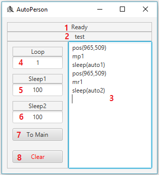

이번에는 Edit Page에 대해 알아보도록 하겠습니다.
아래 사진이 Edit Page입니다.

| 번호 | 설명 |
|---|---|
| 1 |
녹화 상태를 나타냅니다. "Ready"는 녹화 중이 아닐 때를 뜻합니다. 초록색으로 "Recording"이라고 표시되면 녹화 중이라는 뜻입니다. |
| 2 | 현재 수정 중인 스크립트 이름을 나타냅니다. |
| 3 |
스크립트 내용이 담깁니다. 더 자세한 설명은 다음 파트에 나옵니다. |
| 4 |
스크립트의 실행 횟수를 나타냅니다. 'i'를 입력하면 스크립트가 무한으로 실행됩니다. |
| 5 |
auto1의 값을 나타냅니다. 더 자세한 설명은 다음 파트에 나옵니다. |
| 6 |
auto2의 값을 나타냅니다. 더 자세한 설명은 다음 파트에 나옵니다. |
| 7 | Main Page로 이동합니다. |
| 8 | 스크립트를 백지화합니다. |